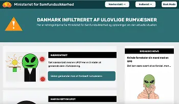
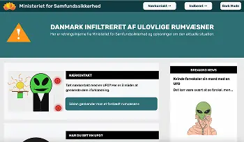

Tema 4 - Grundlæggende Brugergrænsefladeudvikling
TilbageI tema 4 arbejdede jeg på grundlæggende brugegrænsefladeudvikling. Her fik jeg udleveret en opgave med at udvikle et emergency site baseret på et fælles grundsite. Desuden fik jeg wireframes at arbejde ud fra. Jeg valgte selv mit eget tema og tilpassede emergency sitet med fokus på ideudvikling først, dernæst de visuelle elementer og interaktive funktioner efter.
Dertil arbejdede jeg med valget af emnet ved hjælp af krydsmetoden, som er en metode for ideudviklings fasen. Det går ud på at jeg skulle skrive mange tilfældige ord, der passede til temaet emergency. Herefter kombinerede jeg ordene sammen på forskellige måder for at kom frem til nye ideer til sitet. Metoden var med til at hjælpe mig med at tænke mere frit, kreativt og ud af boksen for at finde et tema, som skilte sig ud fra de klassiske metoder med ideudvikling, såsom brainstorming osv. Og med det kom jeg selv frem til temaer, som alarmberedskab, rumvæsner og invasion af jorden.
Jeg arbejde så videre i min opgave med det visuelle indhold, herunder infografik og kontaktformularer. Jeg startede først med at udvikle en infografik i form af et rumvæsen i forklædening, hvor brugeren fik muligheden for at kunne klikke rundt på forskellige hotspots af rumvæsnet og få vist information om den. Det gav på samme tid den visuelt effekt og engagement fra brugeren, samt bidrage til emergency temaet. Og i forhold til klik på en hotspot, så vil information om rumvæsnet blive vist til højre i en tekstfelt ved hjælp af Javascript. Infografikken blev tegnet i Adobe Illustrator og gemt som SVG, så den kunne bruges direkte på emergency sitet. Og som nævnt tidligere med hjælp fra Javascript gjorde jeg infografikken interaktiv, så information blev vist, når en bruger klikkede på de hotspots. Derudover det arbejdede jeg med kontakt formularer. Her blev jeg klogere på, hvordan formularer kan bruges til at samle information på en overskuelig måde. Jeg lavede så en formular, hvor brugeren kunne indtaste deres oplysninger og rapporter en situation, herunder observationen af et rumvæsen. I formularen arbejdede jeg med at lave labels, inputfelter og validering, så formularen var enkel at bruge, hvor data blev behandlet af Javascript.
Jeg arbejde så videre i min opgave med det visuelle indhold, herunder infografik og kontaktformularer. Jeg startede først med at udvikle en infografik i form af et rumvæsen i forklædening, hvor brugeren fik muligheden for at kunne klikke rundt på forskellige hotspots af rumvæsnet og få vist information om den. Det gav på samme tid den visuelt effekt og engagement fra brugeren, samt bidrage til emergency temaet. Og i forhold til klik på en hotspot, så vil information om rumvæsnet blive vist til højre i en tekstfelt ved hjælp af Javascript. Infografikken blev tegnet i Adobe Illustrator og gemt som SVG, så den kunne bruges direkte på emergency sitet. Og som nævnt tidligere med hjælp fra Javascript gjorde jeg infografikken interaktiv, så information blev vist, når en bruger klikkede på de hotspots. Derudover det arbejdede jeg med kontakt formularer. Her blev jeg klogere på, hvordan formularer kan bruges til at samle information på en overskuelig måde. Jeg lavede så en formular, hvor brugeren kunne indtaste deres oplysninger og rapporter en situation, herunder observationen af et rumvæsen. I formularen arbejdede jeg med at lave labels, inputfelter og validering, så formularen var enkel at bruge, hvor data blev behandlet af Javascript.
Emergency site

 


Klik på knapperne for at læse mere om projektet